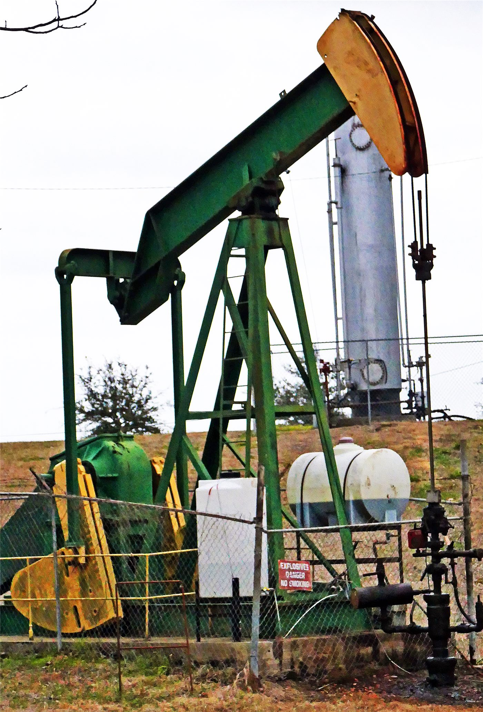

미국, 베네수엘라 원유 증산 추진… 에너지장관 "중국이 새 수익 가져갈 권리 없다"
미국이 베네수엘라의 원유 증산을 추진하고 있다. 미 에너지장관은 증산으로 생기는 새 수익을 중국이 채무 상환 명목으로 가져갈 권리는 없다고 밝혔다.
유선경 기자 · 2026.09.05
橋국제

미국이 베네수엘라 원유 생산 확대를 추진하는 가운데, 미 에너지장관은 증산에 따른 새로운 수익을 중국이 채무 변제 명목으로 가져갈 권리는 없다는 입장을 밝혔다.
광고 문의 · 300×250베네수엘라는 세계 최대 수준의 확인 매장량을 보유하고 있으나, 제재와 설비 노후로 생산량이 크게 줄어든 상태다. 증산에는 대규모 설비 투자와 기술 인력이 필요하다.
중국이 언급된 배경에는 원유 담보 차관 구조가 있다. 중국은 과거 베네수엘라에 자금을 빌려주고 원유로 상환받는 방식의 계약을 맺어 왔으며, 이 채무 관계가 남아 있다.
미국의 구상은 두 가지 목표를 동시에 겨냥한 것으로 읽힌다. 하나는 세계 원유 공급을 늘려 유가를 낮추는 것이고, 다른 하나는 베네수엘라에 대한 중국의 채권 지위를 약화시키는 것이다.
실현 가능성은 별개 문제다. 증산에는 시간이 걸리고, 국제 석유회사의 투자 판단에는 정치적 안정성과 계약 보장이 전제된다. 정책 발표와 실제 생산량 사이에는 통상 수년의 간격이 있다.
유가에 미치는 영향도 즉각적이지 않다. 중동 정세로 인한 위험 프리미엄이 유지되는 상황에서, 대서양 방면 공급 증가가 상쇄 효과를 낼지는 규모와 속도에 달려 있다.
아시아 정유업계에는 원유 도입선 다변화 관점에서 의미가 있다. 다만 수송 거리와 원유 성상 차이로 실제 도입 판단은 단가와 정제 설비 적합성에 따라 결정된다.
출처·참고 (사실 확인용 — 본문은 직접 재작성)
· https://www.ltn.com.tw/
· https://www.ltn.com.tw/